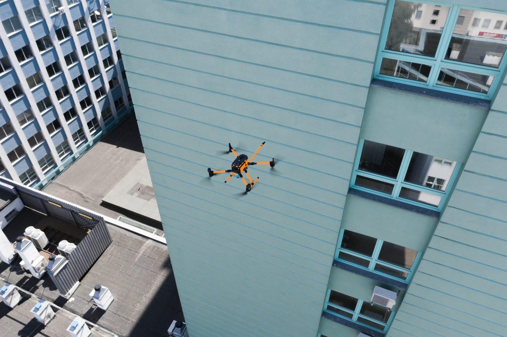
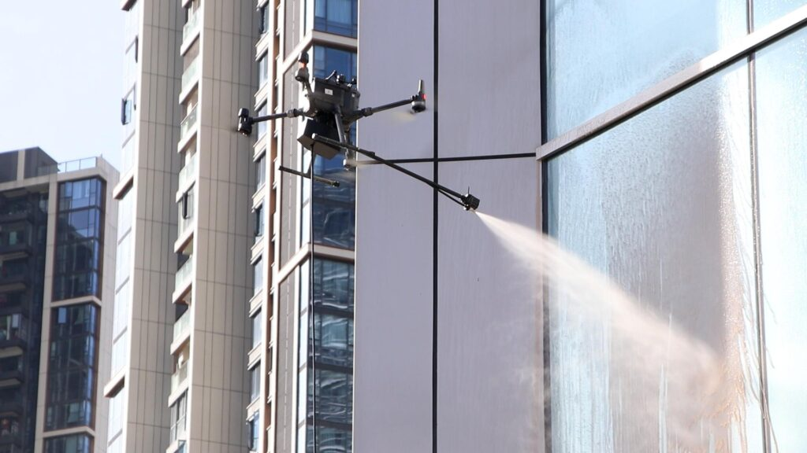
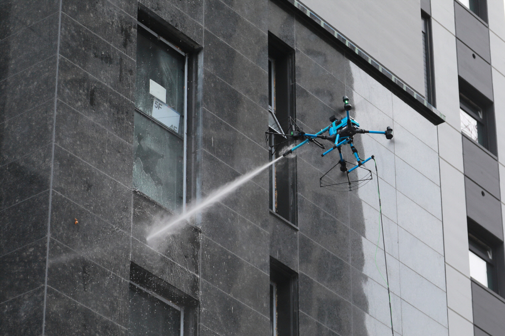

Mycie dronem · Kraków i okolice
Elewacje, okna, fasady szklane i panele fotowoltaiczne — czyszczone z powietrza metodą soft-wash. Bez rusztowań, bez ryzyka, do 10× szybciej.

Co robimy
Niskociśnieniowy soft-wash z drona — skuteczny dla każdej z tych powierzchni, a przy tym łagodny dla materiału.
Tynki, klinkier, beton i kamień — usuwamy glony, kurz i zacieki bez naruszania powierzchni.
WięcejWieżowce, biurowce, witryny szklane — krystaliczny połysk bez smug i bez podnośnika.
WięcejCzyste panele to wyższy uzysk. Mycie demineralizowaną wodą, bez zarysowań.
WięcejDachówka i blacha bez mchu i nalotu — soft-wash, który zabezpiecza na lata.
WięcejNasza przewaga

Jak pracujemy
Oględziny obiektu na miejscu lub online na podstawie zdjęć i wymiarów. Wycena bez zobowiązań.
Zabezpieczamy strefę pracy i myjemy dronem metodą soft-wash. Bez przerywania działania obiektu.
Impregnacja umytej powierzchni, która opóźnia ponowne osadzanie się brudu i mikroorganizmów.

Soft-wash
Soft-wash to mycie niskociśnieniowe — łagodniejsze od myjki wysokociśnieniowej, a równie skuteczne. Nie wbija brudu w strukturę tynku, nie wypłukuje fug i nie uszkadza powierzchni.
Dobrana chemia rozpuszcza zabrudzenia i mikroorganizmy, a po umyciu zabezpiecza powierzchnię — efekt utrzymuje się znacznie dłużej.
Poznaj metodęFAQ
Tak. Pracujemy niskim ciśnieniem (soft-wash), które nie wbija brudu w strukturę i nie uszkadza tynku, fug ani powłok — to metoda łagodniejsza niż klasyczna myjka wysokociśnieniowa.
Standardowo do ok. 40 metrów. Przy wyższych obiektach dobieramy sprzęt i scenariusz lotu indywidualnie — opisz nam obiekt, a potwierdzimy wykonalność.
Najczęściej nie. Operator pracuje z ziemi, a my zabezpieczamy jedynie strefę pod miejscem mycia. Biuro, sklep czy zakład mogą zwykle działać normalnie.
Kraków i cała Małopolska. W przypadku większych zleceń dojedziemy też poza województwo — zapytaj o szczegóły.
Bezpłatnie. Wystarczą zdjęcia, lokalizacja i przybliżone wymiary, albo umawiamy oględziny na miejscu. Ofertę przygotowujemy zwykle w 1–2 dni robocze.
Bezpłatna wycena
Napisz lub zadzwoń — przygotujemy ofertę dopasowaną do Twojego obiektu w Krakowie i okolicy.